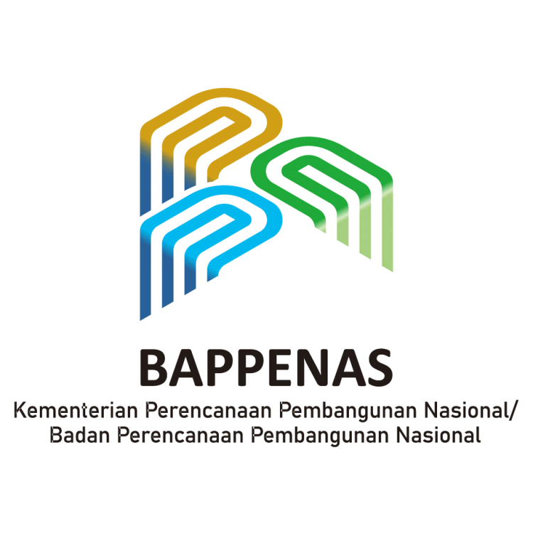
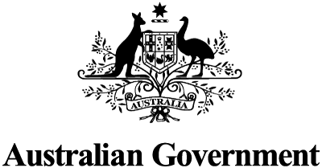
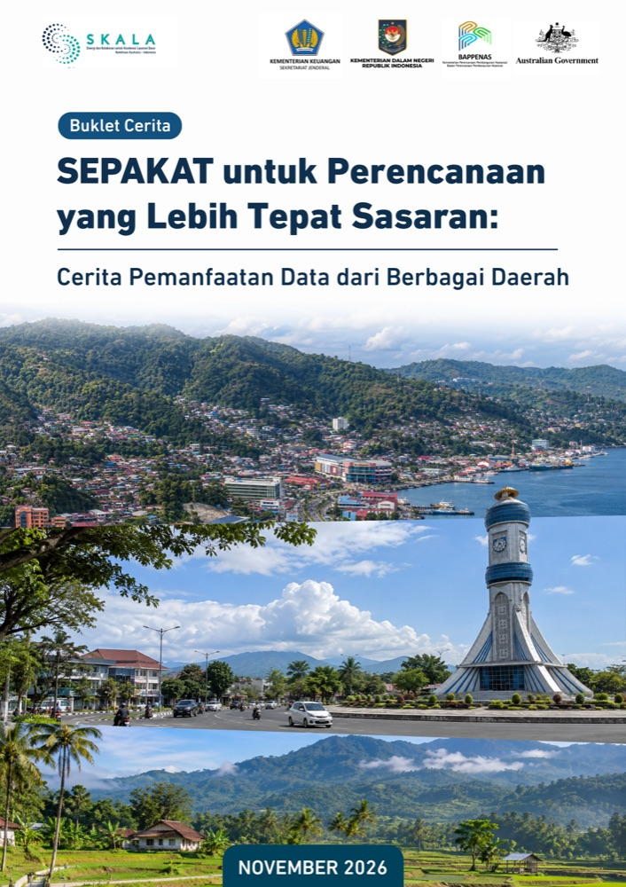
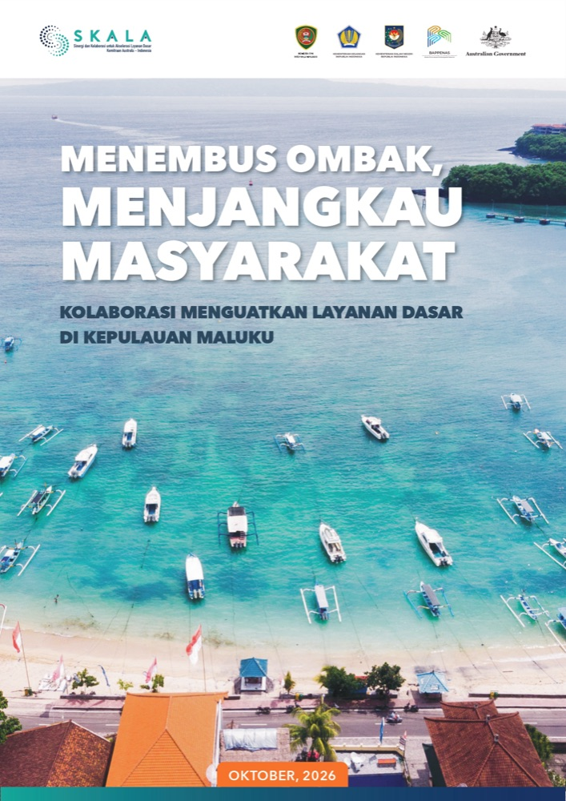
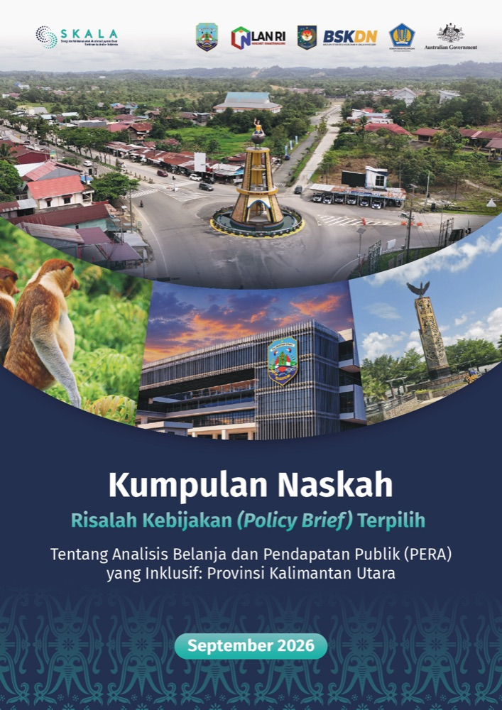

Pemkab Raja Ampat Mulai Menyalurkan Bantuan Sosial ORISUN bagi Lansia Orang Asli Papua
Pemkab Raja Ampat Mulai Menyalurkan Bantuan Sosial ORISUN bagi Lansia Orang Asli Papua
Skala, architecture and interior design
Strengthening systems. Improving lives.
SKALA is an Australia-Indonesia partnership working to strengthen local governance and improve the delivery of basic services. By bringing together government institutions, development partners, and communities, we support more inclusive, responsive, and evidence-informed policies that create lasting impact across Indonesia.
SKALA at a Glance
- People reached with emergency aid in 2025
- 1.2M
- Provinces where our field teams work
- 18
- Local partners, from village health posts to youth groups
- 340
- Of every donation spent directly on programmes
- 92%
Driving inclusive development through stronger local governance, better access to basic services, and meaningful collaboration. Across Indonesia, SKALA works alongside government institutions and local partners to turn evidence into action and support lasting improvements for communities.


Partners and implementers




Programme areas
Our work is organised around six topics. Choose one to see where we work on it, what we have learned and how you can take part.
Data-Driven Governance, topic hub

Strengthening data systems and evidence-based decision-making for better public policies.
Data-Driven Governance
Local Governance Strengthening, topic hub

Enhancing local government capacity, coordination, and institutional effectiveness.
Local Governance Strengthening
Equitable Basic Services, topic hub

Supporting more accessible and equitable delivery of essential public services.
Equitable Basic Services
Inclusive Development Approach, topic hub

Integrating gender equality, disability, and social inclusion into development processes.
Inclusive Development Approach
Regional Fiscal Strengthening, topic hub

Improving subnational fiscal management and resource allocation for basic services.
Regional Fiscal Strengthening
Strategic Policy Collaboration, topic hub

Connecting government institutions and development partners to advance policy implementation.
Strategic Policy Collaboration
Wilayah kerja
Pilih provinsi untuk melihat fokus program di wilayah tersebut.
Jelajahi wilayah kerja- Programme goal
- 1
- End-of-program outcomes
- 3
- Intermediate outcomes
- 9
Stronger local systems. Better basic services. More inclusive development.
Illustrative goal and outcomes for layout only, to be replaced with the programme’s results framework.
Government data systems
1 / 2
Latest news
Pemkab Raja Ampat Mulai Menyalurkan Bantuan Sosial ORISUN bagi Lansia Orang Asli Papua
Latest news
 Menjaga Layanan Dasar di Tengah Transisi Kepemimpinan Daerah
Menjaga Layanan Dasar di Tengah Transisi Kepemimpinan Daerah Papua Barat Daya Luncurkan Portal Cenderawasih untuk Perkuat Perencanaan Pembangunan dan Layanan Dasar
Papua Barat Daya Luncurkan Portal Cenderawasih untuk Perkuat Perencanaan Pembangunan dan Layanan Dasar Papua Selatan Perkuat Data dan Perlindungan Sosial bagi Orang Asli Papua
Papua Selatan Perkuat Data dan Perlindungan Sosial bagi Orang Asli Papua NTB Luncurkan Dashboard Eksekutif untuk Memperkuat Pembangunan Berbasis Data
NTB Luncurkan Dashboard Eksekutif untuk Memperkuat Pembangunan Berbasis Data
Articles
 SEKAR Inklusif: Sistem Manajemen Pembelajaran untuk Memperkuat Partisipasi Masyarakat dalam Proses Pembangunan
SEKAR Inklusif: Sistem Manajemen Pembelajaran untuk Memperkuat Partisipasi Masyarakat dalam Proses Pembangunan Menguatkan Kemandirian Fiskal Daerah melalui Local Tax Ratio
Menguatkan Kemandirian Fiskal Daerah melalui Local Tax Ratio Maluku Perkuat Perencanaan Pembangunan Adaptif Hadapi Risiko Kenaikan Muka Air Laut
Maluku Perkuat Perencanaan Pembangunan Adaptif Hadapi Risiko Kenaikan Muka Air Laut- Mendorong Penganggaran Pemerintah Pusat yang Lebih Responsif terhadap Tantangan Geografis Daerah
- SIGAP Menggerakkan Tata Kelola Data di Aceh
- Membangun Kepercayaan Warga, Memperkuat Data OAP Papua Selatan dari Kampung
Publications

SEPAKAT untuk Perencanaan yang Lebih Tepat SasaranCerita Pemanfaatan Data dari Berbagai Daerah
Menembus Ombak, Menjangkau MasyarakatKolaborasi Menguatkan Layanan Dasar di Kepulauan Maluku
Kumpulan Naskah Risalah Kebijakan (Policy Brief) TerpilihTentang Analisis Belanja dan Pendapatan Publik (PERA) yang Inklusif: Provinsi Kalimantan Utara
Work with us
Building stronger systems takes collective action.
Join SKALA in strengthening local governance, advancing inclusive development, and improving access to basic services across Indonesia.